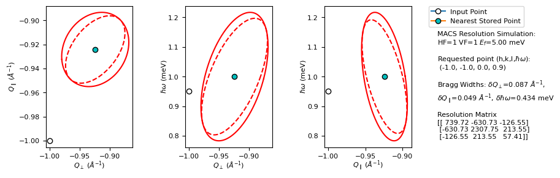
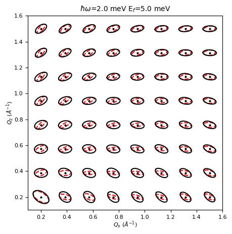

This page was generated from
docs/source/notebooks/MACS_User_notebook.ipynb.
[Download notebook.]
Interactive online versions: .
.

Interactive online versions:
Resolution notebook for MACS users - Use colab button for interactivity.¶
Adjust the lattice parameters and sample orientation based on your needs, a false sample in the laboratory frame is used as an example.
[1]:
!pip install -q git+https://github.com/thallor1/pyMACS.git requests
[2]:
import numpy as np
import pyMACS
[3]:
# Here, a false sample in the laboratory frame default. Update with your lattice parameters below.
# The false sample has lattice parameters such that H, K, L are in units of inverse angstrom.
# i.e. H=1, K=1 is the same as Qx=1 \AA^{-1}, Qz=1 \AA^{-1}
a,b,c = 2.0*np.pi, 2.0*np.pi, 2.0*np.pi
alpha,beta,gamma = 90.0,90.0,90.0
u_vec = [1,0,0]
v_vec = [0,1,0]
# Macs final energy is required here:
macsEf = 5.0
[4]:
#Set up our pyMACS object
from pyMACS.virtualMACS import VirtualMACS
import pyMACS
import numpy as np
macs_instr = VirtualMACS('resolution',cifName=None,useOld=True)
macs_instr.sample.formula_weight=432.7
macs_instr.sample.a = a
macs_instr.sample.b = b
macs_instr.sample.c = c
macs_instr.sample.alpha = alpha
macs_instr.sample.beta = beta
macs_instr.sample.gamma = gamma
macs_instr.sample.orient_u = u_vec
macs_instr.sample.orient_v = v_vec
macs_instr.sample.project_sample_realspace()
macs_instr.kidney.Ef=macsEf
WARNING: No cif file found. Importing sample parameters from a cif file is the preferred method to initialize the sample. Defaulting to dirac.cif
Option 1: Resolution matrix for specific H, K, L, \(\Delta\)E¶
This function pulls from a tabulated list of pre-calculated ellipsoids. The results will never be as good as a full simulation; if a width seems strange, it likely means that the ellipsoid was not generated correctly.
[5]:
# A warning will be thrown if the given HKL point is out of the scattering plane, but the script will attempt to project
# the result onto the scattering plane.
h = -1.0
k = -1.0
l = 0.0
E = 1.0 #energy transfer, i.e. Ei=6 meV
M,M_fwhms,Q_hkw = pyMACS.scripting.macs_resfunc(h,k,l,E,macsEf,macs_instr,gen_plot=True,verbose=True,calc_mode='load_cov')
Qx, Qz, for hkl = [-1.00003, -1.00003]
Covariance matrix in lab system:
[[ 0.00123123 -0.0007835 0.00431767]
[-0.0007835 0.00170764 -0.00145206]
[ 0.00431767 -0.00145206 0.03394656]]
Resolution matrix in lab system:
[[2154.46756618 784.01566905 -240.49098004]
[ 784.01566905 893.0110895 -61.52070585]
[-240.49098004 -61.52070585 57.41462014]]
Transformation into (Qpara, Qperp, E) system:
[[ 0.70710678 -0.70710678 0. ]
[-0.70710678 -0.70710678 0. ]
[ 0. 0. 1. ]]
Mean (Q, E) vector in (Qpara, Qperp, Qup, E) system:
[1.50477994e-16 1.30696000e+00 1.00000000e+00]
Covariance matrix in (Qpara, Qperp, E) system:
[[ 0.00225294 0.00023821 0.00407981]
[ 0.00023821 0.00068593 -0.00202629]
[ 0.00407981 -0.00202629 0.03394656]]
Resolution matrix in (Qpara, Qperp, E) system:
[[ 739.72365879 -630.72823834 -126.55109451]
[-630.72823834 2307.75499689 213.55451109]
[-126.55109451 213.55451109 57.41462014]]
3d resolution ellipsoid diagonal elements fwhm (coherent-elastic scattering) lengths:
[0.08658107 0.04901882 0.31077529]
3d resolution ellipsoid principal axes fwhm: [0.04880687 0.38542616]
Incoherent-elastic fwhm: 0.4339 meV
Qx,E sliced ellipse fwhm and slope angle: [0.10351388 0.04681662], 19.4081
Qz,E sliced ellipse fwhm and slope angle: [0.08528154 0.39976076], 10.1762
Qx,Qy sliced ellipse fwhm and slope angle: [0.04880687 0.38542616], 5.3734
Qx,E projected ellipse fwhm and slope angle: [0.11264675 0.06006053], 8.4555
Qz,E projected ellipse fwhm and slope angle: [0.09811947 0.43715579], 7.2187
Qx,Qy projected ellipse fwhm and slope angle: [0.05587151 0.43465123], 3.4734
[Errno 2] No such file or directory: 'Calculated_ellipsoid_pngs/MACS_resfunc_Ef_5.00meV_h_-1.00_k_-1.00_l_0.00_w_0.95.pdf'
Saving figure failed, ensure that the specfied figure directory exists.
/home/tjh/mambaforge/envs/mantid/lib/python3.10/site-packages/pyMACS/scripting/resfunc.py:588: UserWarning: FigureCanvasAgg is non-interactive, and thus cannot be shown
fig.show()

Option 2 : Plot multiple resolution ellipsoids in the scattering plane at constant energy.¶
Most of the code here is used to project the ellipsoids : Users only need to concern themselves with the first few lines.
[6]:
from pyMACS import scripting
import numpy.linalg as la
from pyMACS.virtualMACS import VirtualMACS
import matplotlib.pyplot as plt
#Adjust this as needed.
hpts = np.linspace(0.2,1.5,8)
kpts = np.linspace(0.2,1.5,8)
H,K = np.meshgrid(hpts,kpts)
hpts = H.flatten()
kpts = K.flatten()
lpts = np.zeros(len(hpts))
deltaE = 2.0
Ef=5.0
[7]:
fig,ax = plt.subplots(1,1,figsize=(5,5))
fig.subplots_adjust(hspace=0.5,wspace=0.5)
qx_pt_list = []
qz_pt_list = []
for i,hpt in enumerate(hpts):
qvec = hpts[i]*macs_instr.sample.astar_vec_labframe+\
kpts[i]*macs_instr.sample.bstar_vec_labframe+\
lpts[i]*macs_instr.sample.cstar_vec_labframe
qxpt,qzpt = macs_instr.sample.HKL_to_QxQz(qvec[0],qvec[2],qvec[1])
M_load,M_diag_load,Q_hkw_load = macs_instr.resmat(qvec[0],qvec[2],qvec[1],deltaE,Ef,
gen_plot=False,verbose=False)
# The resolution matrices have been generated for each ellipsoid here - these need to be
# projected into the scattering plane, which is done below.
sig2hwhm = np.sqrt(2. * np.log(2.))
sig2fwhm = 2.*sig2hwhm
Qmean=np.array([qxpt,qzpt,Q_hkw_load[2]])
results,Qres_proj = scripting.calc_ellipses(M_load,verbose=False)
ellfkt = lambda rad, rot, phi, Qmean2d : \
np.dot(rot, np.array([ rad[0]*np.cos(phi), rad[1]*np.sin(phi) ])) + Qmean2d
# 2d plots
#fig = plot.figure()
ellis = results
num_ellis = len(ellis)
coord_axes = [[0,1], [1,2], [0,2]]
coord_axes = [[0,1], [0,2], [1,2]]
ellplots = []
for ellidx in [0]:
# centre plots on zero or mean Q vector ?
QxE = np.array([[0], [0]])
QxE = np.array([[Qmean[coord_axes[ellidx][0]]], [Qmean[coord_axes[ellidx][1]]]])
phi = np.linspace(0, 2.*np.pi, 361)
ell_QxE = ellfkt(ellis[ellidx]["fwhms"]*0.5, ellis[ellidx]["rot"], phi, QxE)
ell_QxE_proj = ellfkt(ellis[ellidx]["fwhms_proj"]*0.5, ellis[ellidx]["rot_proj"], phi, QxE)
ellplots.append({"sliced":ell_QxE, "proj":ell_QxE_proj})
ax.plot(ell_QxE[0], ell_QxE[1], c="r", linestyle="dashed")
ax.plot(ell_QxE_proj[0], ell_QxE_proj[1], c="k", linestyle="solid")
ax.plot(qxpt,qzpt,marker='o',mfc='k',mec='k',ms=2)
qx_pt_list.append(qxpt)
qz_pt_list.append(qzpt)
ax.set_xlabel(r"$Q_x\ (\AA^{-1}$)",labelpad=0,fontsize=8)
ax.set_ylabel(r"$Q_z\ (\AA^{-1}$)",labelpad=0,fontsize=8)
#Match limits of dave plots
ax.set_aspect(1)
ax.set_xlim(np.nanmin(qx_pt_list)-0.1,np.nanmax(qx_pt_list)+0.1 )
ax.set_ylim(np.nanmin(qz_pt_list)-0.1,np.nanmax(qz_pt_list)+0.1)
ax.set_title(r"$\hbar\omega$="+f"{deltaE:.1f} meV "+r"E$_f$="+f"{Ef:.1f} meV",fontsize=10)
#ax[1].set_aspect(1)
#ax[2].set_aspect(1)
fig.show()
/tmp/ipykernel_208522/1738536076.py:61: UserWarning: FigureCanvasAgg is non-interactive, and thus cannot be shown
fig.show()

Option 3 : Get FWHM values of dQx, dQy, dQz for an arbitrary list of \(h,k,l,\hbar\omega\)¶
Uses pre-built interpolator objects, as shown below.
[8]:
#Adjust this as needed.
H1,K1,L1 = 1.0,1.0,0.0
macsEf = 3.7
omegas = np.linspace(0,10,50)
macs_instr.kidney.Ef=macsEf
interp_dQx, interp_dQz, interp_dE = macs_instr.load_res_fwhm_interp_objects()
#These interpolators require input in terms of lab fram, not H,K,L. This is done in the following way.
qx1,qz1 = macs_instr.sample.HKL_to_QxQz(H1,K1,L1)
#Now call the interpolators:
Efwhms1 = []
Efwhms2 = []
for i,dE in enumerate(omegas):
dE_fwhm1 = interp_dE([qx1,qz1,dE])
print(f"{dE:.4f} {dE_fwhm1[0]:.4f}")
Efwhms1.append(dE_fwhm1)
fig,ax = plt.subplots(1,1)
ax.plot(omegas,Efwhms1,color='k',ls='-',label=f"h={H1:.2f},k={K1:.2f},l={L1:.2f}")
#ax.plot(omegas,Efwhms2,color='b',ls='-',label=f"h={H2:.2f},k={K2:.2f},l={L2:.2f}")
ax.set_xlabel(r"$\hbar\omega$ (meV)")
ax.set_ylabel(r"$\delta E_{FWHM}$ (meV)")
ax.set_title(f"Energy Resolution at [{H1:.2f},{K1:.2f},{L1:.2f}] point, MACS Ef={macsEf}",fontsize=10)
---------------------------------------------------------------------------
FileNotFoundError Traceback (most recent call last)
Cell In[8], line 6
4 omegas = np.linspace(0,10,50)
5 macs_instr.kidney.Ef=macsEf
----> 6 interp_dQx, interp_dQz, interp_dE = macs_instr.load_res_fwhm_interp_objects()
7 #These interpolators require input in terms of lab fram, not H,K,L. This is done in the following way.
8 qx1,qz1 = macs_instr.sample.HKL_to_QxQz(H1,K1,L1)
File ~/mambaforge/envs/mantid/lib/python3.10/site-packages/pyMACS/virtualMACS.py:1094, in VirtualMACS.load_res_fwhm_interp_objects(self)
1092 f_dQx = interp_dir+"MACS_Ef_3p7_interp_dQx.pck"
1093 f_dQz = interp_dir+"MACS_Ef_3p7_interp_dQz.pck"
-> 1094 with open(f_dQx, "rb") as input_file:
1095 interp_dQx = pickle.load(input_file)
1096 with open(f_dQz, "rb") as input_file:
FileNotFoundError: [Errno 2] No such file or directory: '/home/tjh/mambaforge/envs/mantid/lib/python3.10/site-packages/pyMACS/scripting/MACS_Ef_3p7_interp_dQx.pck'